The logo
One lockup, four colourways. Pick the cut that already matches its background — never recolour the file, and never place the orange lockup on Eco Green.
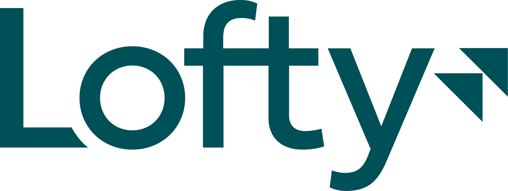
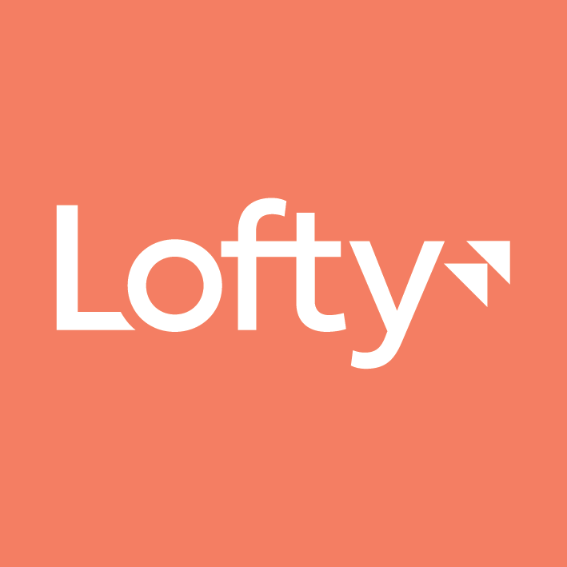
One lockup, four colourways. Pick the cut that already matches its background — never recolour the file, and never place the orange lockup on Eco Green.


Six organic silhouettes, each in the three brand colourways. They are backgrounds and crops, not illustration: one per surface, beside or behind content, never under text. The supplied files carry no fill or stroke definition, so all six are shown as solid masses in the brand colour — if the Lines set is meant to read as an outline, the original styled files are needed.

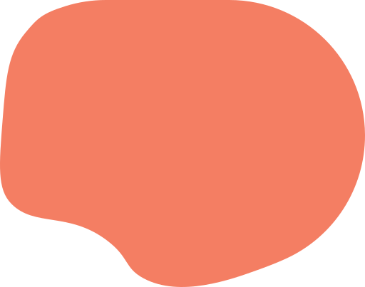
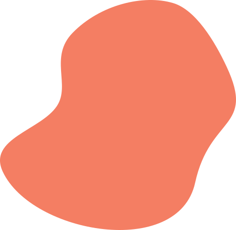
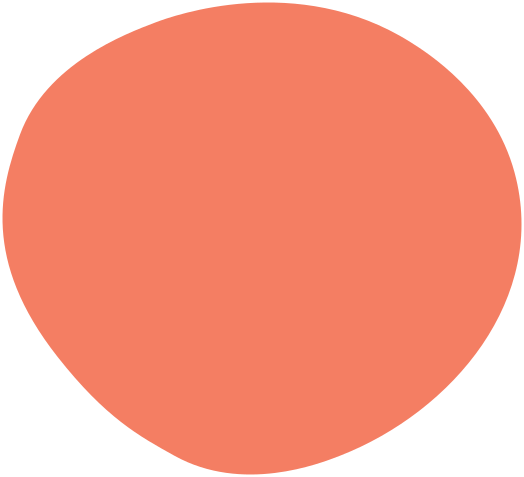
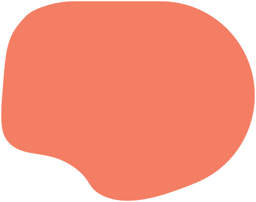
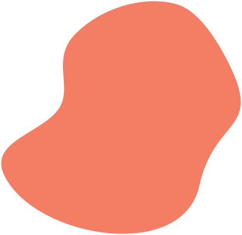
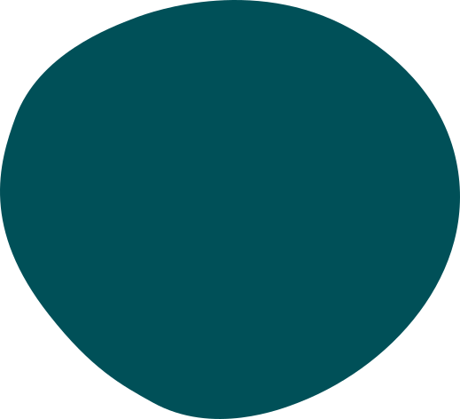
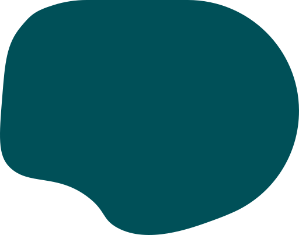
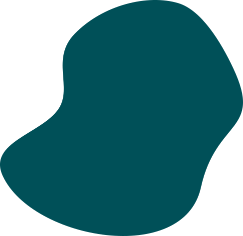
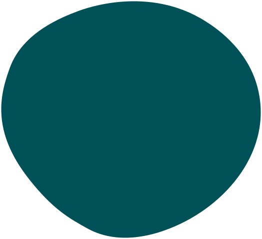
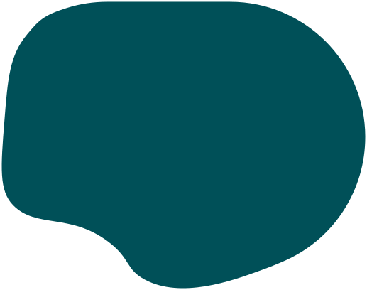
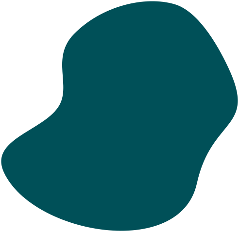
